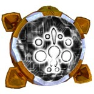

Каждое Прайм Ядро несет в себе фрагмент способности Прайма и передает его кибертронианцу, который владеет им. Прайм Ядра обладают мощью, намного превосходящей возможности стандартного Силового Ядра, и представляют собой уникальные предметы, которые изменят ваш подход к битве.
Важные факты о Прайм Ядрах:| Фото | Название | Описание и применение |
|---|---|---|
|  | Алхемист Прайм | Любая атака исцеляет бота на 5,5%/15% от нанесённого им урона (5,5% на 1-м уровне, 15% на 20-м уровне). Можно одеть на Дрифта, Голдфайера. |
 |
Альфа Трион | Получай 1 очко Умения каждые 18/9,5 секунд (18 сек. на 1-м уровне, 9.5 сек. на 20-м уровне). Можно одеть на Тракса, Пайпса, Пира Магну, Ультра Магнуса. |
 |
Амальгамус Прайм | В альт. режиме увеличивает весь урон (включая умения) на 5%/15.5% (5% на 1-м уровне, 15,5% на 20-м уровне) и восстанавливает 1% здоровья каждые 0.5 сек. Можно одеть Сентиус Магнусу, Читору, Блейдзу, Импактору. |
 |
Лидж Максимо | После использования умения, ближайшие боты на аванпостах будут взломаны в течении 5,5/15 сек. (5.5 сек. на первом уровне, 15 сек. на 20-м). Вы не можете быть взломаны. Можно одеть на ботов класса танк, также на Элиту-1, Стар Сейбера. |
 |
Мегатронус | Бойца окружает пламя, причиняющее каждую секунду 26%/45% (26% на 1-м уровне, 45% на 20-м уровне) от урона бота по целям, находящихся на расстоянии ближнего боя. Можно одеть на ботов класса танк, также на Элиту-1, Стар Сейбера. |
 |
Микронус | Каждые 5 сек. восстанавливает 0,5%/2,4% (0,5% на 1-м уровне, 2,4% на 20-м уровне) здоровья всем союзникам находящимся поблизости. Можно одеть на Уилджека, Ретчета, Тракса, Хаунда В.А.М.П., ботов класса танк. |
 |
Нексус Прайм | Когда экипированный бот в битве, Гештальт на защите получает на 5%/33,5% больше урона. (5% на 1-м уровне, 33,5% на 20-м уровне). Если ты высаживаешь экипированного бота до Гештальта, то Гештальт будет наносить 5%/33,5% доп. урона. (5% на 1-м уровне, 33,5% на 20-м уровне) и на рейдах вх. урон по нему будет уменьшен на 31%/50% (31% на 1-м уровне, 50% на 20-м уровне). |
 |
Оникс Прайм | Если здоровье падает ниже 40%, то увеличивается урон обычных атак и уменшается вх. урон на 18%/46%(18% на 1-м уровне, 46% на 20-м уровне). Можно одеть на бота класса танк. |
 |
Прима | Врагам, получившим урон от твоих обычных атак, прияиняется 6%/25% доп. урона (6% на 1-м уровне, 25% на 20-м уровне) от всех источников в течении 5 сек. Не распространяется на штаб. Можно одеть на Скайбёрст, или любого бота с больним УВС и Флаком. |
 |
Квинтус Прайм | При уничтожении здания или бота аванпоста, создаётся Шарктикон с 10,5%/20% (10,5% на 1-м уровне, 20% на 20-м уровне) от твоего Здоровья и Урона - длительность 7 сек. Можно одеть на любого бота. Лучше всего на Читора, Сентиус Магнуса, Элиту-1. Если на боте есть Птераксадон, Шарктиконы могу работать как дроны Броадсайда (чеить при взрыве) |
 |
Солус Прайм | Каждые 15 сек. создается турель, обладающая 15%/34% от твоего здоровья и урона (15% на 1-м уровне, 20% на 20-м уровне) и действующая в течении 12 сек. Можно одеть Ультра Магнусу, Капу, Раст Даст. |
 |
Вектор Прайм | При 0 здоровьяты отправляешся назад во времени, перемещаясь в область и восстанавливая здоровье за 2,5 сек/12 сек. до этого. Одно использование за битву. Можно одеть Голдфайеру, Дрифту, Элите-1, Стар Сейберу. |